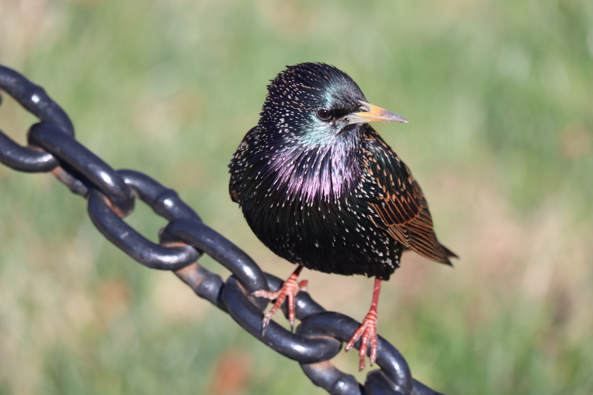
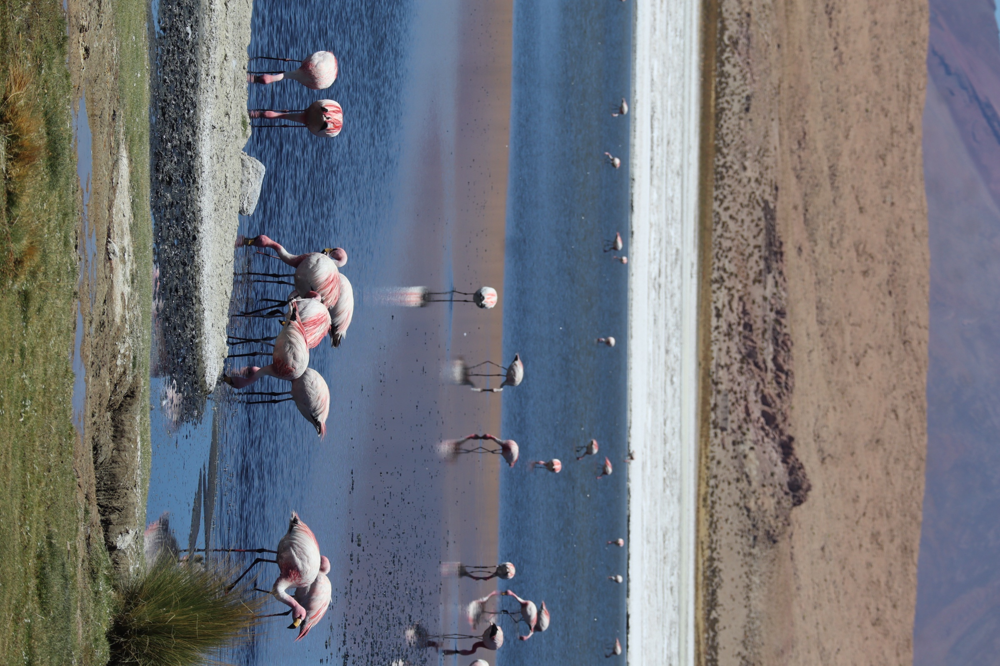
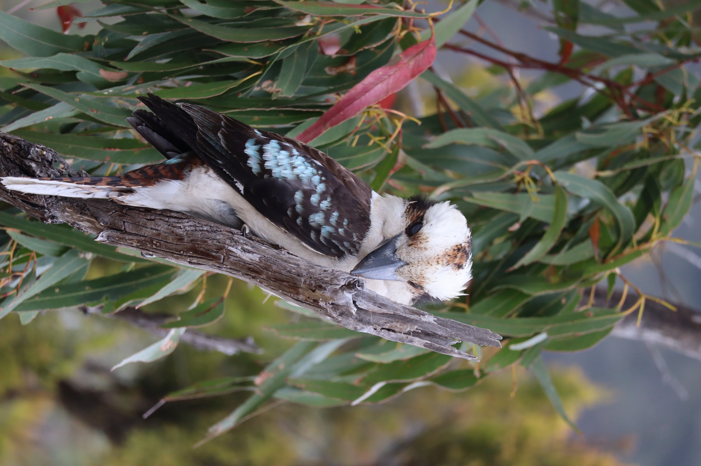
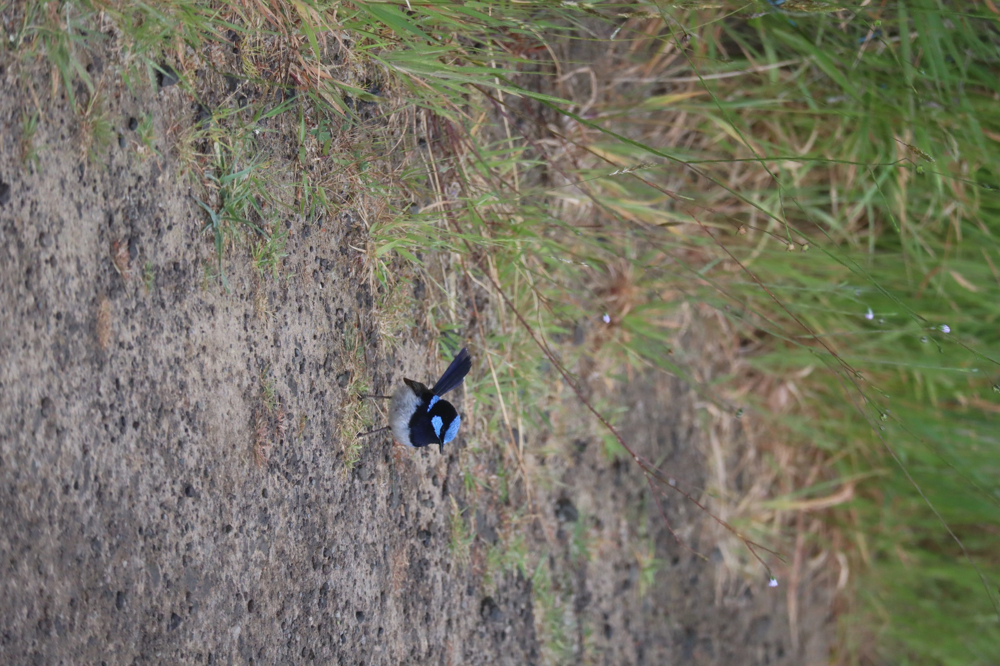
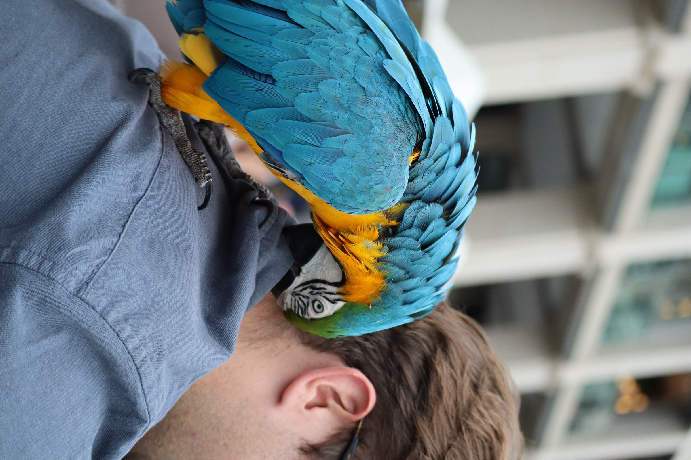
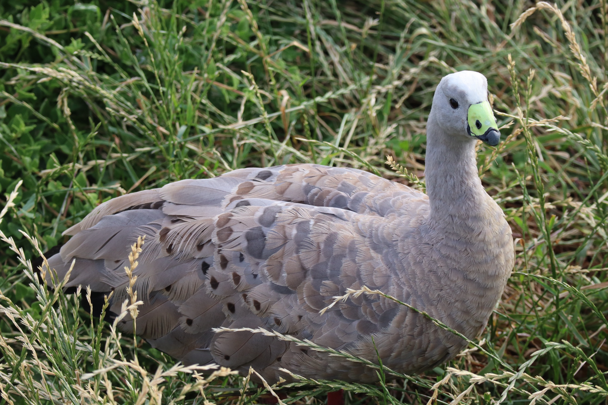
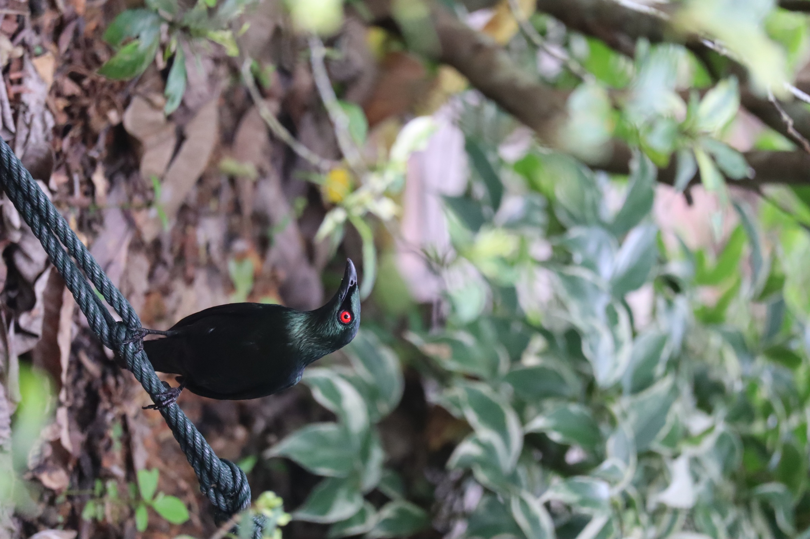
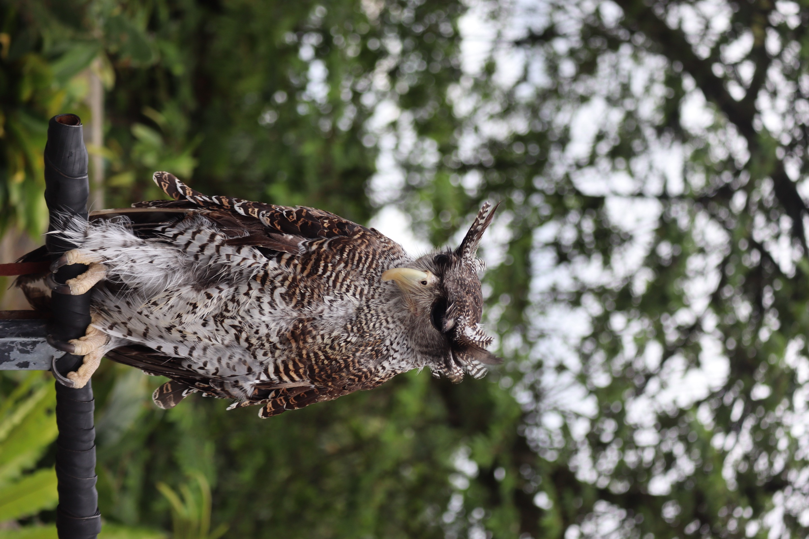
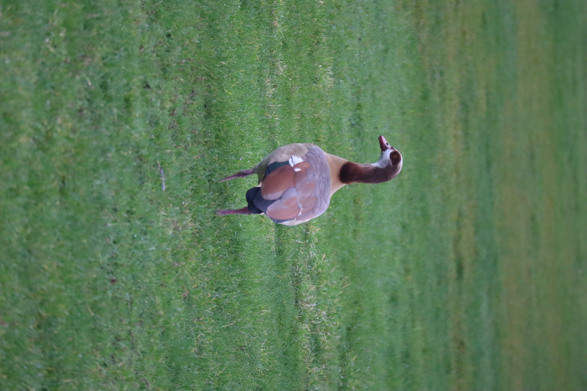
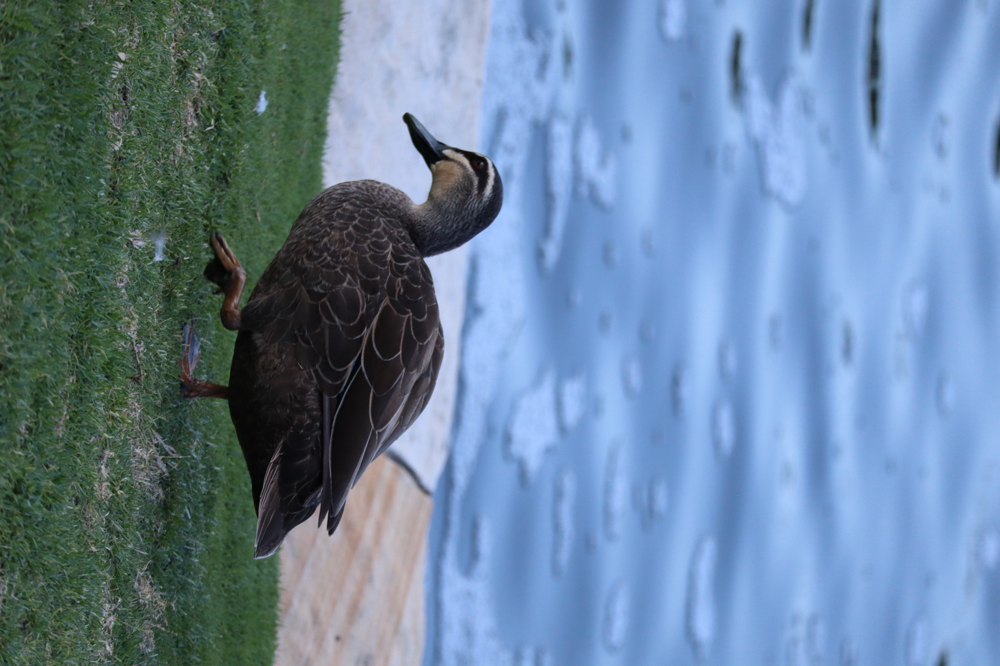

Stray
Birds
A gallery kept for its own sake, named after Tagore. Birds met while travelling, on a temple wall, a gravestone, a basalt column, a thorn tree, a tidal flat.
A sparrow on a gilded robe in Bagan and a robin on a cemetery statue in Edinburgh are doing the same thing, living in the gaps we leave. Street corner or mountain forest, the bird is equally at home. New sightings get added as I go.

Woven from grass, slung from an acacia thorn, entered from below so nothing can reach in from above. The best architecture on this whole site is not mine.

On the silk hem of a Buddha's robe, entirely unimpressed by the gold.

An eight-hundred-year-old brick arch. The temple is the cliff face they were always going to use.

Waiting out the tide on a weed bank, still enough to be mistaken for a rock.

Two metres of wing out of a bird that had looked like nothing at all.

On a weathered statue in an old burial ground. Cemeteries are some of the best habitat a dense city has, because nobody tidies them.

Drying its wings on hexagonal basalt. The rock got there first, but a ledge is a ledge.

Turquoise, violet and lilac on a dead thorn branch, waiting to drop on something below.

A whole colony in one acacia. Density is not automatically the enemy.

Four species sharing one bank, each feeding at a different depth on a different thing. This is what a functional guild looks like before it becomes a variable in a model.

A chain is only another kind of branch when you are looking for a perch.

Pink points spread through a lake so still that the mountains seem to be feeding there too.

Quiet for the photograph, though the whole neighbourhood knows the call.

A small blue punctuation mark at the edge of the path.

A flash of tropical blue above the pavement.

The bright green-yellow bill gives away an Australian goose, not a British duck.

A red eye and an oil-slick sheen in the understory.

The bird watches from the edge of the frame; the forest does the rest.

A long way from the Nile, completely at ease on an English lawn.

The waterline, the lawn, a well-worn city route.
Every city leaves room for a bird if you look long enough. New sightings get added as I go.
← Back to work